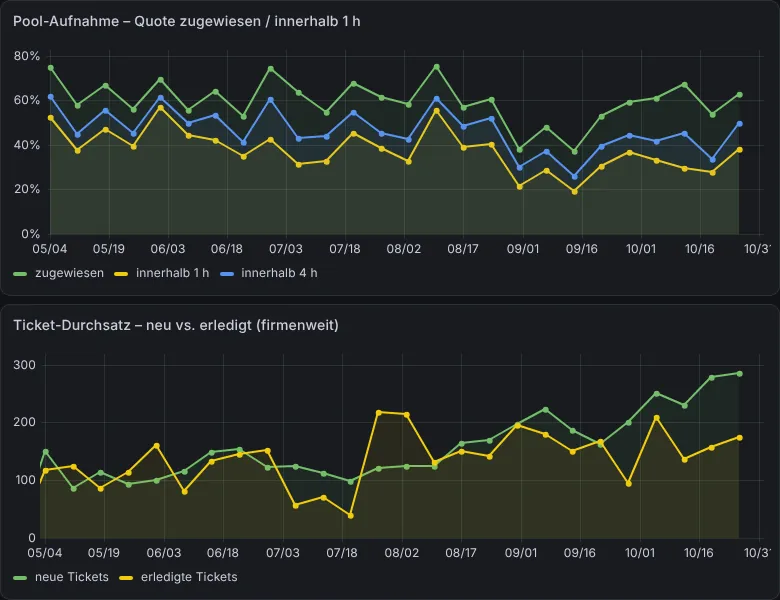

Ihr Betrieb läuft. Auch wenn Sie nicht hinschauen.
Ich automatisiere Abläufe, mache Ihre Zahlen täglich sichtbar und berate IT-Systemhäuser zu TANSS.

Fast nie fehlt es an Fleiß. Es fehlt am Takt.
So klingt es, wenn ich neue Kunden zum ersten Mal treffe. Wenn Sie bei einem Satz nicken, sind Sie hier richtig.
„Ich tippe jeden Montag Zahlen aus drei Systemen in eine Excel.“
Geschäftsführung, Handel
„Wenn Frau Berger im Urlaub ist, gehen keine Rechnungen raus.“
Inhaber, Handwerksbetrieb
„Wie der Oktober lief, weiß ich Mitte November.“
Geschäftsführung, Produktion
„Wir leisten mehr, als wir abrechnen.“
Geschäftsführung, IT-Systemhaus
„Social Media machen wir, wenn Zeit ist. Also nie.“
Marketing, Mittelstand
Sinngemäße Aussagen aus Erstgesprächen, Namen geändert.


- #30812 · Muster GmbH1,5 h · Wartungsvertraggeprüft
- #30815 · Beispiel AG0,75 h · Vor-Ortgeprüft
- #30819 · Nordlicht KG2,0 h · ohne VertragDispo prüft
- #30821 · Muster GmbH0,5 h · Fernwartunggeprüft
- #30824 · Hafenblick e.K.1,0 h · Katalog fehltDispo prüft

Die Zahlen holen sich selbst.
Umsatz, Aufträge und Tickets aus allen Systemen stehen im Dashboard, bevor jemand im Büro ist.
Der Tag ist sortiert.
Neue Mails und Tickets sind gelesen, eingeordnet und verteilt. Eine kurze Übersicht wartet mit fertigen Antwortentwürfen.
Die Rechnungen stimmen.
Jede geleistete Stunde ist gegen Vertrag und Leistungskatalog geprüft. Lücken sind markiert, nicht vergessen.
Und Sie fangen mit dem an, was Ihren Kopf braucht.
Kunden, Team, die nächste Idee. Der Rest hat schon im Takt gespielt.
256 Flows. Über 10.000 Abläufe am Tag. Über 20 Stunden Handarbeit, die kein Mensch mehr machen muss.
Gemessen in unserem eigenen Betrieb über 24 Stunden am 1. November 2026, aus den Zeitwerten unserer n8n-Flows, ohne einmalige Migrationen.
Was kostet Sie die Routine?
Schätzen Sie grob, wie viel Zeit bei Ihnen in Abtippen, Zusammensuchen und Nachhaken steckt. Sie sehen sofort, was das im Jahr kostet und wie viel davon sich zurückholen lässt.
Rechnet nur in Ihrem Browser. Nichts wird gespeichert oder verschickt.
Eine Mail kommt rein. Der Rest läuft.
Einer unserer echten Abläufe, von der Kundenmail bis zur Rechnung. Türkis ist die Maschine. Lila sind Sie.
Wie sehr läuft Ihr Betrieb im Takt?
Fünf ehrliche Fragen. Sie sehen sofort, wo Sie stehen. Nichts wird gespeichert oder verschickt.
Beantworten Sie die Fragen, dann sehen Sie hier Ihr Ergebnis.
„Ich verkaufe Ihnen nichts, was bei mir nicht selbst jeden Tag läuft.“
Ich bin Nils Rochholl. Meinen ersten Kunden habe ich mit 15 betreut, seit 2002 bin ich selbstständig und führe heute ein IT-Systemhaus. Ich kenne beide Seiten: den Kunden, der einfach will, dass es läuft, und den Betrieb, in dem trotzdem alles an zu wenigen Köpfen hängt.
Taktcheck
15 Minuten, die sich lohnen.
Nach unserem Gespräch wissen Sie, wo Sie Zeit verlieren, was sich automatisieren lässt und was es ungefähr kostet. Oder ich sage Ihnen ehrlich, dass es sich nicht lohnt.
- kostenlos, per Video
- ohne Vorbereitung
- kein Verkaufsgespräch
- mit kurzer Notiz danach